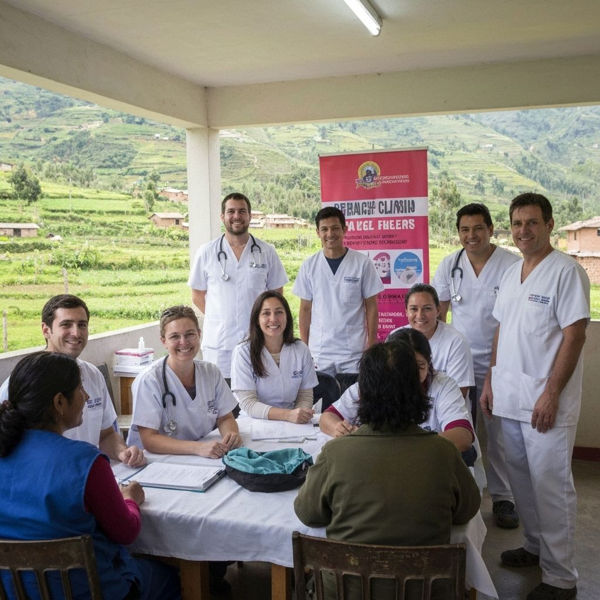

Convocatorias abiertas
Oportunidades seleccionadas según tus intereses y ubicación
📚 Educación
Apoyo escolar en Villa El Salvador
Ayuda a niños de primaria con refuerzo en matemáticas y comprensión lectora.
Lima
4 horas/semana
❤️ Salud

Campaña de salud preventiva
Participa en jornadas de despistaje y orientación en salud comunitaria.
Arequipa
Fin de semana
🌱 Ambiente

Reforestación en Cusco
Únete a la siembra de árboles nativos en zonas afectadas por incendios.
Cusco
1 día completo